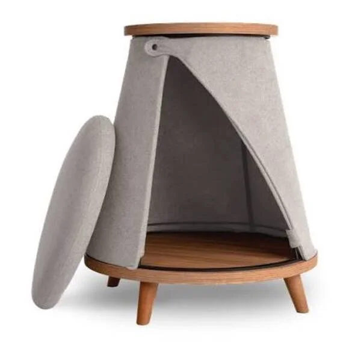

Cama pet oca

R$ 49,90
Descrição
- Cama Pet
- Esta cama pet é ideal para pets de porte pequeno, possui 40x40cm, é feita em material resistente e com enchimento de alta qualidade.
Detalhes
- Tamanho
- 40x40cm
- Indicado para
- Cães de porte pequeno

R$ 49,90